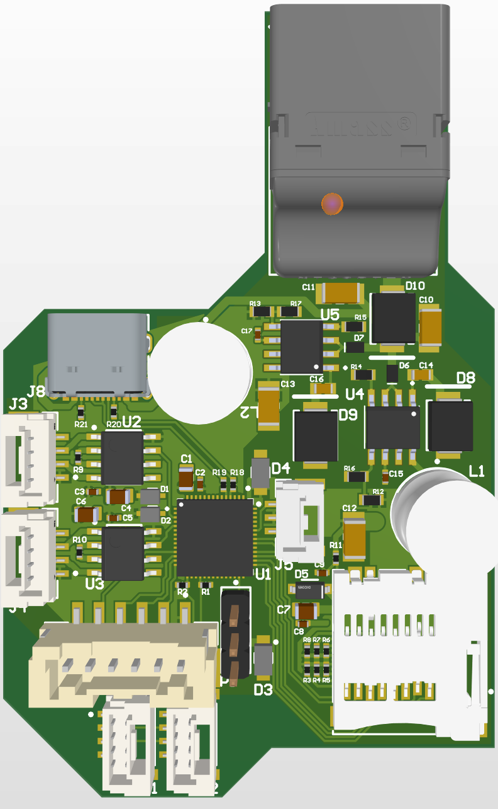
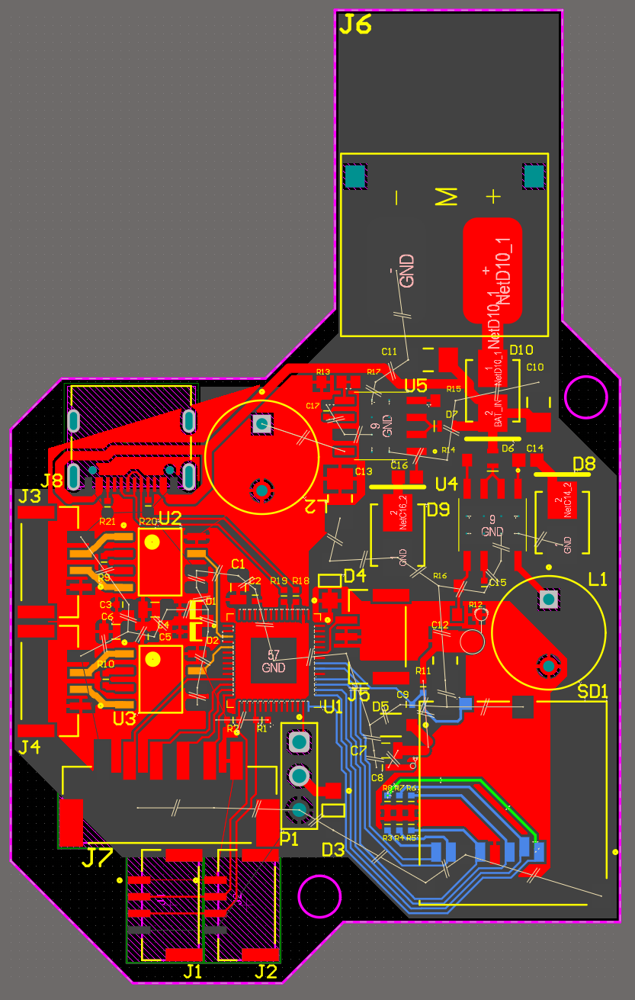
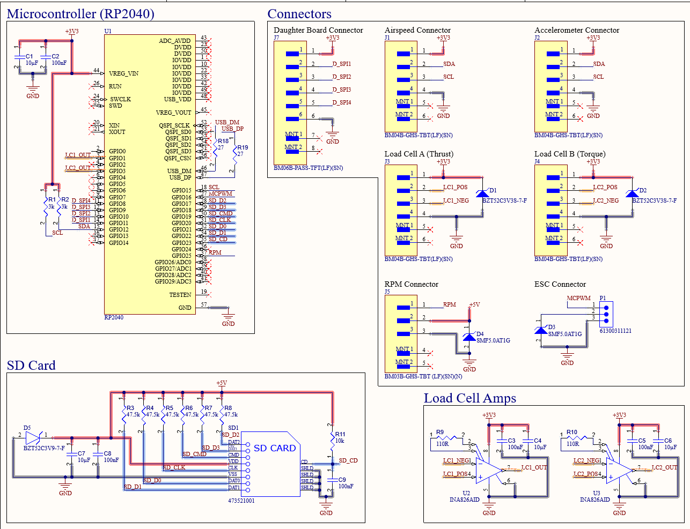
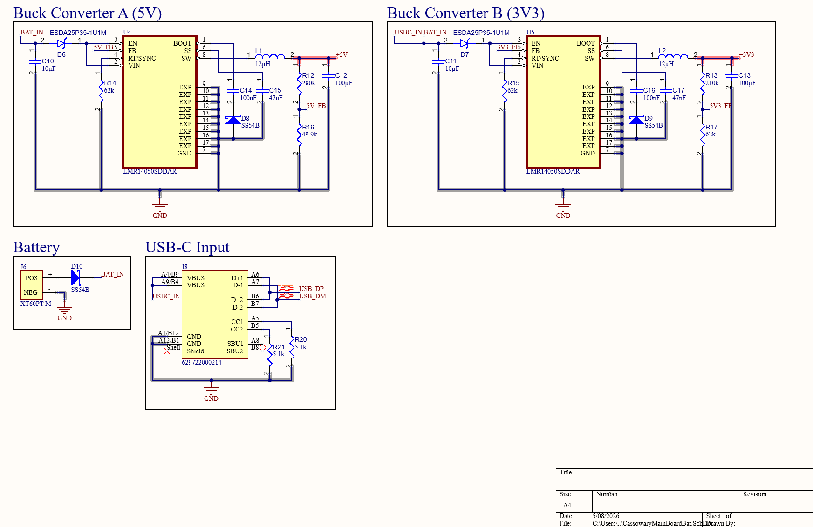

Measurement & Logging Board
Electronics Team Member · Monash Unmanned Aerial Systems · Hardware lead, Board 1
A 4-layer mixed-signal board that captures thrust, torque and power from a heavy-lift drone propulsion test stand at 50 kS/s — while sitting inches from 120 A of switching motor current.




Problem
Manufacturer motor and propeller datasheets can't be taken on trust, so Project Cassowary needed a test stand that measures real thrust, torque and power before any propulsion hardware is signed off for flight.
The measurement problem is the hard part: load cells output millivolts, and they do it right next to a motor drawing surges of up to 120 A. Every bit of that switching noise couples into the signal you are trying to resolve to 0.1%.
Approach
- Owned hardware development of the Measurement & Logging hub (Board 1) and presented it through formal design reviews with industry representatives.
- Selected a high-precision analog front-end around the INA826 instrumentation amplifier to lift millivolt-scale load-cell output while rejecting common-mode EMI.
- Routed a 4-layer board in Altium Designer with the analog section partitioned away from high-current return paths.
- Designed a dual-rail LMR14050 buck converter stage giving independent 3.3 V and 5 V domains, isolating the RP2040 logic from back-EMF transients.
Engineering decisions
Resolving a millivolt signal next to a 120 A motor
- Symptom
- Load-cell readings that track motor RPM rather than actual thrust.
- Root cause
- Bridge output is millivolt-scale; ESC switching and motor current surges couple straight into it.
- Fix
- INA826 instrumentation amplifier with high common-mode rejection, placed close to the sensor, with analog and high-current sections separated in the layout.
Sizing the buck converters without over-engineering the board
- Context
- At the V3 design review the whole power architecture was re-examined.
- Analysis
- Confirmed propulsion testing runs from a 4S LiPo — 16.8 V peak — so I validated the 40 V-rated LMR14050 against that worst case.
- Result
- Better than 2× voltage safety margin while avoiding unnecessary over-specification, keeping fabrication cost down.
Specifications
| Sensing | Instrumentation amplifier | TI INA826 |
| Sensing | Acquisition rate | 50 kS/s |
| Sensing | Front-end precision | 0.1% |
| Power | Regulation | Dual-rail LMR14050 buck (40 V rated) |
| Power | Supply under test | 4S LiPo · 16.8 V peak |
| Power | Logic rails | Independent 3.3 V / 5 V |
| Compute | Microcontroller | RP2040 |
| Layout | Stack-up | 4-layer · Altium Designer |